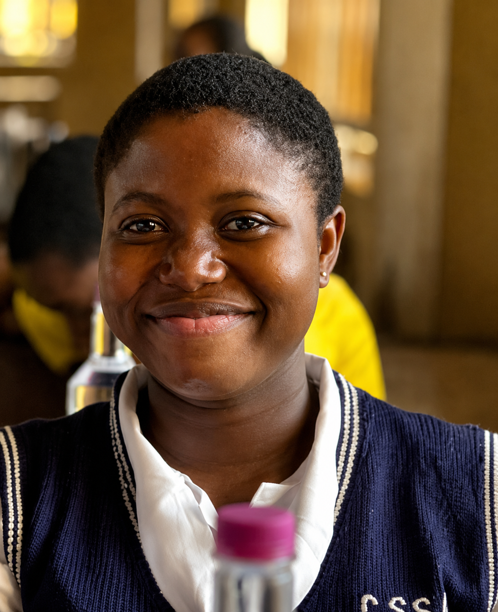

TeensLECC
The homepage announces the Teens Leadership, Education & Creativity Conference 2026, a gathering for young people’s confidence, creativity, and leadership. Member accounts also describe a teenage arm called SLADDS.Read TeensLECC
Turning Purpose Into Action.
ES International is a youth-centered non-profit organization focused on developing ethical, innovative, and impact-driven leaders across Africa through leadership development, mentorship, creativity, and entrepreneurship.
Three areas of work
This page brings together TeensLECC, ES Venture Lab, and Community Impact Programmes. Each section uses language, member accounts, and photographs already on the website. Where a detail has not been published, the page leaves a marked space for ES International to complete.
The homepage announces the Teens Leadership, Education & Creativity Conference 2026, a gathering for young people’s confidence, creativity, and leadership. Member accounts also describe a teenage arm called SLADDS.Read TeensLECC
Two published accounts describe ES Venture Lab as early practice in UI/UX design and full-stack development. A fuller programme description is not yet on the site.Read ES Venture Lab
The Impact page describes community and humanitarian work that helps young people take part in addressing local challenges. Named initiatives are not yet published.Read Community Impact

01 · Teens
The homepage describes the Teens Leadership, Education & Creativity Conference 2026 as an inspiring gathering designed to equip young people with the confidence, creativity, and leadership mindset to shape their communities and the future of Africa.
Partner with us to create meaningful opportunities for the next generation. Your sponsorship can help bring together young minds, inspiring voices, and transformative experiences.
The conference poster already used on the homepage prints 14 November 2026, 10am, at Mac Anthony Event Center, Egbu by Christiana Junction. Those details are not written out in the homepage text. Sponsorship enquiries are directed to the Support page.
Separately, member accounts describe a teenage arm of ES International called SLADDS. Those accounts are personal stories. The site does not say whether SLADDS and TeensLECC are the same programme.
To be completed by ES International. Confirm what TeensLECC includes, and how it relates to SLADDS and to the 2026 conference.
Across the organisation, the About page says ES International was born to bridge the leadership and innovation gap among Africa’s youth. One stated aim is to help young people explore, discover, and enhance their potential through debates, drama, public speaking, and performing arts.
To be completed by ES International. A challenge statement written for TeensLECC itself.
To be completed by ES International. The official approach for TeensLECC. The conference purpose above is the only approach language published under that name.
The conference is the only activity published under the Teens Leadership, Education & Creativity name. Member accounts of the teens arm, SLADDS, also name the following. These are personal recollections, not an official activity list.
To be completed by ES International. The approved list of current TeensLECC activities, schools, and initiatives.
The site does not publish totals for participation, schools, or later outcomes. Member accounts credit the teens arm with early leadership, public speaking, communication, confidence, and organisational skill. Several members connect later study and work to that foundation. Those remain individual accounts.
To be completed by ES International. Outcomes ES International wants stated as programme results, including any figures.
To be completed by ES International. No SDG alignment is published for TeensLECC.
Emelayo Theophilus is published as Creative Lead & Teens Coordinator. That is the only core-team role whose title names teens work. Meet the core team
Member accounts name Holy Ghost College, Amakohia Comprehensive Secondary School, and Emmanuel College, all in Owerri, as schools where they took part. The site does not list them as institutional partners. The conference invites sponsors.
To be completed by ES International. Who leads TeensLECC, and which schools or organisations are confirmed partners.

To be completed by ES International. Photographs that can be captioned as TeensLECC or SLADDS.
02 · Venture
ES Venture Lab is named in two member accounts. The site does not yet publish a programme description, curriculum, or cohort record beyond what those members wrote.
I was opportuned to gain access to the world of UI/UX design through the ES Venture lab programmes, where I gained my preliminary skills and have leveraged on it to further my career as a product/web designer, adding to my visual/brand identity design skills.
Oguh Evan C, Brand Identity & Visual Designer, Director of BoldMark Creations, Owerri
My experience with ES International, especially through ES Venture Lab, has been a great part of my growth in technology. It gave me the opportunity to expand my knowledge of full-stack development and gain more practical experience in building web applications.
David Alayo Olaniyi, Full-Stack Developer, Lagos
Ifeoma Okere describes the Emperors Club as the youth arm focused on entrepreneurship and leadership skills. The site does not describe that club as ES Venture Lab.
To be completed by ES International. An official overview of ES Venture Lab, and whether it is connected to the Emperors Club.
The About page includes an organisational aim to instill a creative and entrepreneurial spirit in teenagers and youth. That aim is not labeled as a Venture Lab challenge.
To be completed by ES International. The challenges ES Venture Lab is designed to address.
To be completed by ES International. How Venture Lab runs: format, length, mentoring, and who it is for.
The two accounts name UI/UX design programmes, and practical full-stack development through building web applications. No other Venture Lab activity is published.
To be completed by ES International. The approved list of Venture Lab activities and cohorts.
Oguh Evan C connects Venture Lab to his later work in product, web, and brand-identity design. David Alayo Olaniyi connects it to fuller practice as a full-stack developer. The site does not publish the number of participants or other results.
To be completed by ES International. Outcomes that should be stated as Venture Lab results.
To be completed by ES International. No SDG alignment is published for ES Venture Lab.
No core-team role is assigned to ES Venture Lab. Uchechi Ishola is Resource Mobilizer and Programmes Manager, and Sunrise Oluebube Chukwukaike is Quality Assurance/Programmes Coordinator. Those titles cover programmes generally. Meet the core team
To be completed by ES International. Venture Lab leads, facilitators, and partners.
To be completed by ES International. No photograph on the site is identified as ES Venture Lab.
03 · Community
We empower communities through inclusive initiatives that uphold human dignity and create meaningful change. By encouraging active participation, we help young people address local challenges and build a more compassionate society.
The About page also states an aim to extend humanitarian support and advocacy to promote equity, inclusion, and human dignity.

The sentences above are the published description of community and humanitarian impact. The current website does not use the title “Community Impact Programmes,” and it does not name individual community programmes.
To be completed by ES International. The official name, purpose, and places of this programme area.
The published text refers to local challenges, human dignity, equity, and inclusion. It does not list those challenges.
To be completed by ES International. The specific community challenges this work addresses.
The Impact page names inclusive initiatives and active participation by young people. No further method is published.
To be completed by ES International. How community programmes are designed and run.
To be completed by ES International. Named community activities, locations, and dates. None are published.
To be completed by ES International. Documented community results. The site does not give figures or case results for this area.
To be completed by ES International. No SDG alignment is published for community programmes.
No team member or partner is assigned to community programmes on the site. Meet the core team
To be completed by ES International. Community programme leads and partners.
Teens work is visible in two ways: a 2026 leadership, education, and creativity conference, and member accounts of the teens arm, SLADDS, describing debate, public speaking, literary work, and student leadership in Owerri schools.
ES Venture Lab is visible through two accounts of early UI/UX and full-stack development experience.
Community and humanitarian impact is named as an area of work. Achievements for that area are not yet published.
The organisation’s stated horizon is a generation of morally grounded, purpose-driven leaders by 2040. This page does not add figures to that vision.
We invite organizations, schools, businesses, and individuals to collaborate in developing Africa's next generation of leaders.